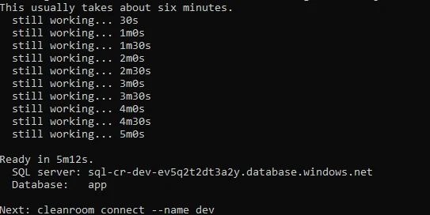
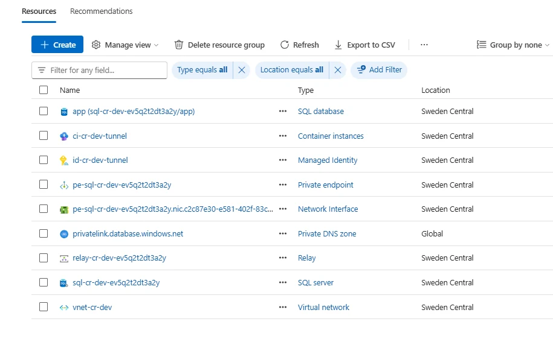
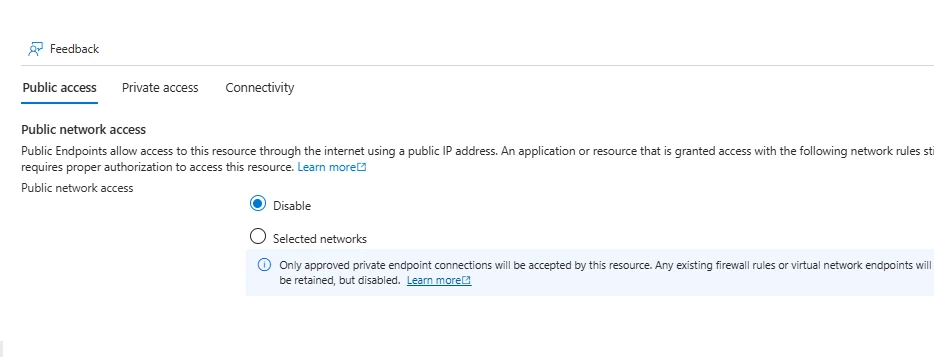
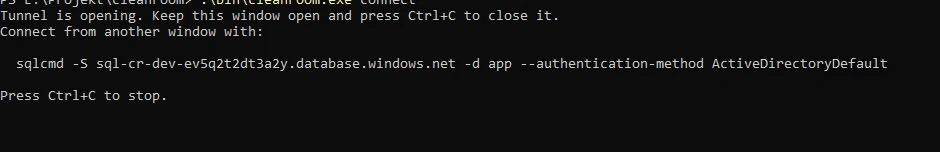
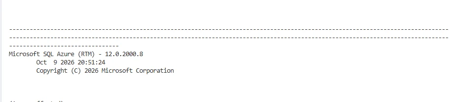
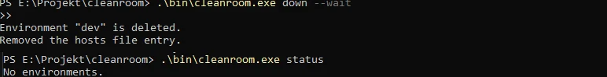

← Alla projektÖppen kod
03 / 06
Cleanroom
En tillfällig, privat databas i Azure på runt fem minuter.
03 / 06
En tillfällig, privat databas i Azure på runt fem minuter.
En utvecklare som behöver en riktig databas att testa mot har oftast två dåliga val: öppna en databas mot internet "bara en stund", eller vänta i dagar på att någon sätter upp en miljö, ett VPN och behörigheter.
Cleanroom ger varje utvecklare en egen privat sandlåda som går att förstöra och slänga när jobbet är klart.





